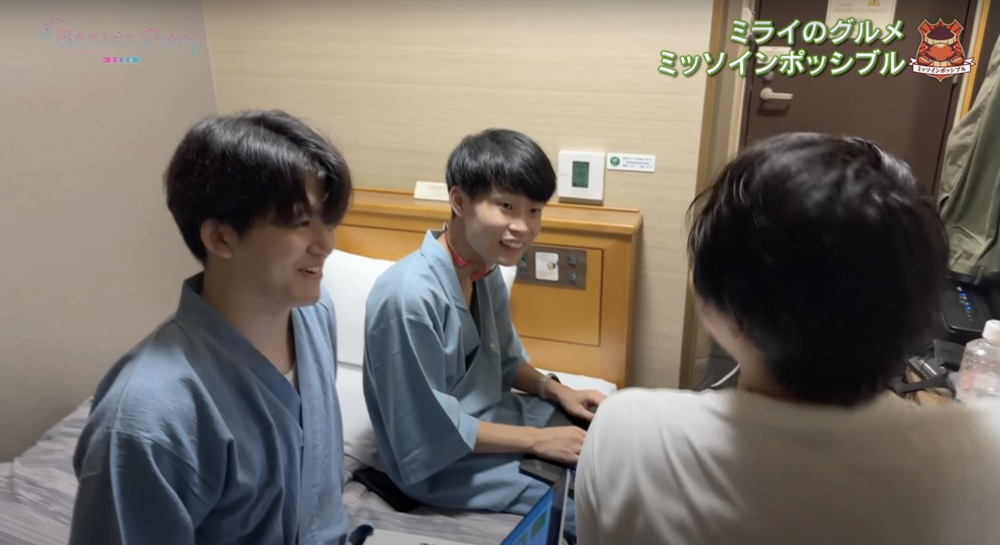
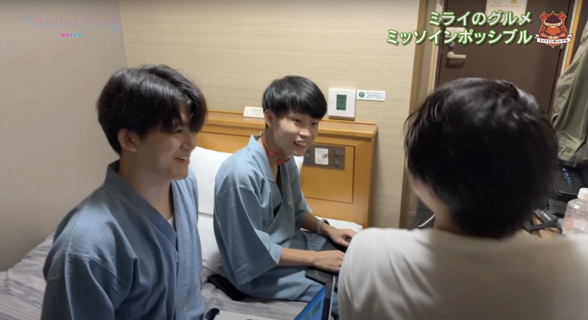

YEAR
TYPE
VRアプリケーション
2024
204X年、石油の採掘量が限界を迎え、「石油の時代」は終わりを迎える。代替エネルギーとしてバイオエタノールの需要が高まり、世界的に穀物の価格が上昇する。そんな中、食べることも燃料として使うこともできる植物「ミラクルウィード」が開発される。しかし、その味はあまり美味しいものではなかった。そこで、VR空間上でミラクルウィードを美味しく、楽しく食べられる体験を提供するVRアプリケーション「ミライのグルメ」を制作しました。
本作品は、名古屋テレビ主催のハッカソン「Electric Sheep 2024」にて、「30年後の食生活はどうなるか？」というテーマのもと制作したものです。本作を通じて、初めてテレビ出演も経験しました。


 
